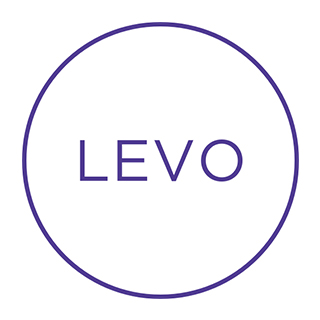

Bringing
data stories
to
life
with Power BI
See the stories
Data Stories
The Progress of Artificial Intelligence
Ride-sharing and self-driving relationships
Water Quality Report
Fatal workplace accidents
Productivity Survey

Girls in STEM
IDG Cloud Intelligence
Virginia Gubernatorial Primaries
France TV
Amazon Growth Story
Interstate population migration
Seattle Traffic Boom
African American Homeownership
U.S. Open Golf Story
KING 5
Case studies
How KING 5 News created an Interactive Data Story
View case study
AP Virginia Elections
View case study
Official Microsoft Blog: AP collaboration
View case study